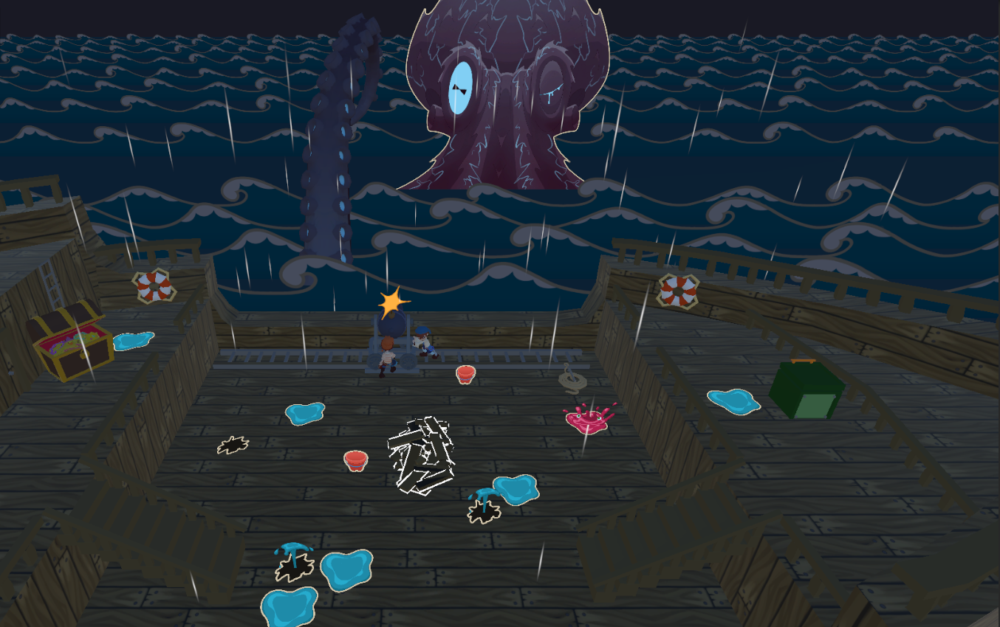

Role
Programmer
Engine
Unity
Language
C#
About the Project
Play as Augusta and Hastings as they live the fantastical story of their grandma as she tells them of her young days as a pirate on the Killick Ocean.
Work together to fight off enemy ships, endure the approaching storm and whatever the storm might bring.

Gameplay
Crew of Two is a couch-coop pirate game built around communication and teamwork. Both players must work together to keep their ship afloat while fighting enemy ships and surviving the dangers of the Killick Ocean.
Players are constantly faced with tasks that require cooperation.
Both players need to work together to repair holes in the ship and remove water before the ship takes too much damage.
When engaging enemy ships, firing the cannons is also a team effort.
Two players are required to retrieve and load the cannonballs, while operating the cannon requires both players, one player aims the cannon while the other controls its horizontal movement.
As the situation becomes more chaotic, players have to communicate, prioritize what needs to be done and coordinate their actions. I
nspired by games such as Overcooked, the gameplay is designed around creating situations where neither player can handle everything alone, making teamwork essential to surviving the journey.

Programming
My work on the project focused on implementing and developing gameplay systems in C# using Unity.
My work on this project focused on developing the interaction system and creating a consistent way for players to interact with the different objects around the ship.
I implemented a physics-based detection sphere around the player that continuously detected nearby interactable objects.
The detected interactables were stored and sorted according to a priority value defined on each interactable.
This allowed the interaction system to automatically determine which object should be interacted with first,
rather than requiring the player to repeatedly press the interaction button to cycle through nearby objects.
This made interactions more predictable and helped create a smoother gameplay experience, particularly in situations where multiple interactables were positioned close together.
Technical Implementation
The interaction system was developed in Unity using C#. Physics.OverlapSphere was used to detect interactable objects within a defined range around the player.
The different interactables were built using inheritance, with a common base interactable class handling shared functionality while individual interactables implemented their own behaviour. This allowed different objects to use the same detection system while maintaining their own unique functionality.
The detection system continuously updated the available interactables as objects entered and left the player's interaction range. Each interactable could also be configured through the Unity Inspector, including its interaction priority, allowing the system to be tuned without modifying the underlying code.
Project Links
Check it out on Itch or the trailer on Youtube!